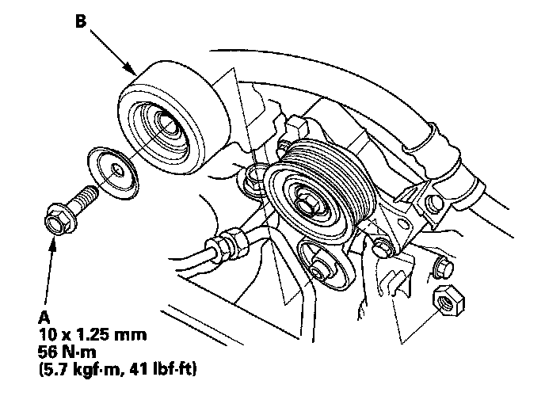

Operation CHARM
: Car repair manuals for everyone.
Home
>>
Honda
>>
2007
>>
Civic Si L4-2.0L
>>
Repair and Diagnosis
>>
Engine, Cooling and Exhaust
>>
Engine
>>
Drive Belts, Mounts, Brackets and Accessories
>>
Drive Belt Tensioner
>>
Service and Repair
>>
Tensioner Pulley Replacement
Tensioner Pulley Replacement
Tensioner Pulley Replacement
1.
Remove the
drive belt
.

2.
Remove the pulley bolt (A), then remove the tensioner pulley (B).
3.
Install the tensioner pulley in the reverse order of removal.